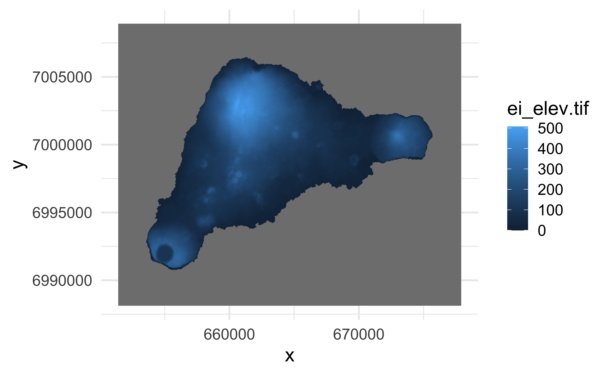
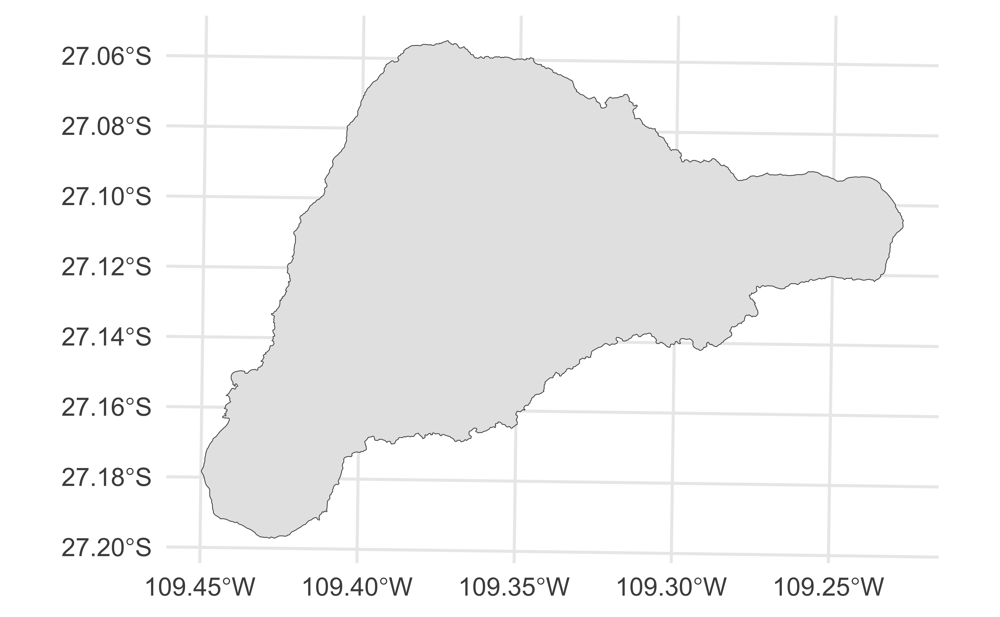
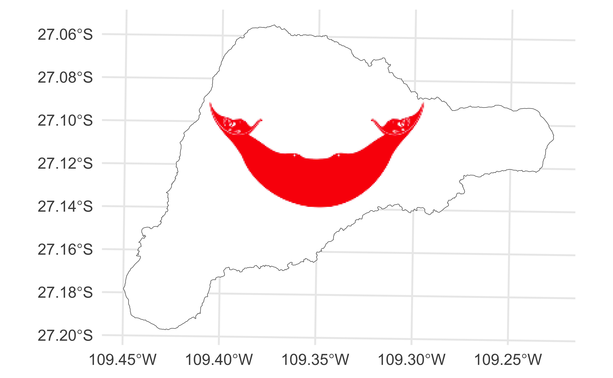

# load packages
library(countdown)
library(tidyverse)
library(ggnewscale)
library(magick)
library(sf)
library(stars)
library(tmap)
# set theme for ggplot2
ggplot2::theme_set(ggplot2::theme_minimal(base_size = 16))
# set figure parameters for knitr
knitr::opts_chunk$set(
fig.width = 7, # 7" width
fig.asp = 0.618, # the golden ratio
fig.retina = 3, # dpi multiplier for displaying HTML output on retina
fig.align = "center", # center align figures
dpi = 300 # higher dpi, sharper image
)Visualizing geospatial data III
Lecture 15
Dr. Mine Çetinkaya-Rundel
Duke University
STA 313 - Spring 2024
Warm up
Announcements
- My office hours this week: Friday, 12-1pm, Old Chem 213
- HW 4 due Tuesday at 5pm
- Project 2 proposal due Wednesday at 1pm
From last time
Finish up ae-10.
Setup
Using stars
Spatiotemporal arrays with stars
The stars package provides infrastructure for data cubes, array data with labeled dimensions, with emphasis on arrays where some of the dimensions relate to time and/or space.
Three-dimensional cube: 
Multi-dimensional hypercube: 
Easter Island
Easter Island (Rapa Nui / Isla de Pascua), a Chilean territory, is a remote volcanic island in Polynesia.
File types
tiffiles are geospatial raster data, e.g., elevation mapsgpkgare geopackage files, modern version of shapefiles
Reading tif files
stars object with 2 dimensions and 1 attribute
attribute(s):
Min. 1st Qu. Median Mean 3rd Qu. Max. NA's
ei_elev.tif 0 56.98041 114.3601 143.5146 204.9752 506.8161 619721
dimension(s):
from to offset delta refsys point x/y
x 1 1060 651409 25 WGS 84 / UTM zone 12S FALSE [x]
y 1 832 7008921 -25 WGS 84 / UTM zone 12S FALSE [y]Plotting tif files
Plays nicely with ggplot2
Reading gpkg files
Simple feature collection with 1 feature and 1 field
Geometry type: POLYGON
Dimension: XY
Bounding box: xmin: 653566.4 ymin: 6990751 xmax: 675697.4 ymax: 7006462
Projected CRS: WGS 84 / UTM zone 12S
# A tibble: 1 × 2
name geom
<chr> <POLYGON [m]>
1 Rapa Nui / Isla de Pascua ((668715.4 7002628, 668776.6 7002640, 668796 700268…Plotting gpkg files
A brief aside‚Ķ
Put a flag on it!
Just for fun…
Put a flag on it!

Finding the “bounding box”
ggplot_build()takes the plot object, and performs all steps necessary to produce an object that can be rendered- Outputs:
- a list of data frames (one for each layer)
- a panel object, which contains all information about axis limits, breaks etc.
ggplot_build()
$data
$data[[1]]
geometry PANEL group xmin xmax ymin ymax
1 POLYGON ((668715.4 7002628,... 1 -1 653566.4 675697.4 6990751 7006462
linetype alpha stroke fill
1 1 NA 0.5 white
$layout
<ggproto object: Class Layout, gg>
coord: <ggproto object: Class CoordSf, CoordCartesian, Coord, gg>
aspect: function
backtransform_range: function
clip: on
crs: NULL
datum: crs
default: TRUE
default_crs: NULL
determine_crs: function
distance: function
expand: TRUE
fixup_graticule_labels: function
get_default_crs: function
is_free: function
is_linear: function
label_axes: list
label_graticule:
labels: function
limits: list
lims_method: cross
modify_scales: function
ndiscr: 100
params: list
range: function
record_bbox: function
render_axis_h: function
render_axis_v: function
render_bg: function
render_fg: function
setup_data: function
setup_layout: function
setup_panel_guides: function
setup_panel_params: function
setup_params: function
train_panel_guides: function
transform: function
super: <ggproto object: Class CoordSf, CoordCartesian, Coord, gg>
coord_params: list
facet: <ggproto object: Class FacetNull, Facet, gg>
compute_layout: function
draw_back: function
draw_front: function
draw_labels: function
draw_panels: function
finish_data: function
init_scales: function
map_data: function
params: list
setup_data: function
setup_params: function
shrink: TRUE
train_scales: function
vars: function
super: <ggproto object: Class FacetNull, Facet, gg>
facet_params: list
finish_data: function
get_scales: function
layout: data.frame
map_position: function
panel_params: list
panel_scales_x: list
panel_scales_y: list
render: function
render_labels: function
reset_scales: function
resolve_label: function
setup: function
setup_panel_guides: function
setup_panel_params: function
train_position: function
super: <ggproto object: Class Layout, gg>
$plot
attr(,"class")
[1] "ggplot_built"Diving into the output
Back to Easter Island…
Let’s get more data
Layering with ggplot2
ae-11: Recreate the visualization below.